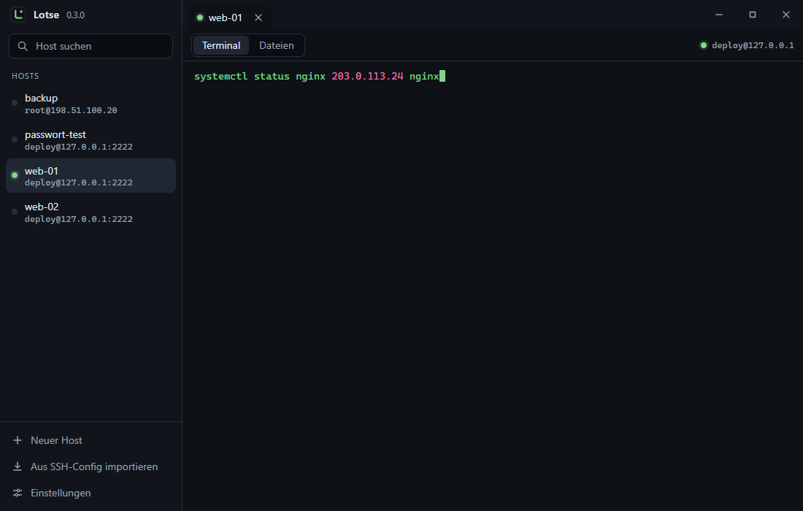
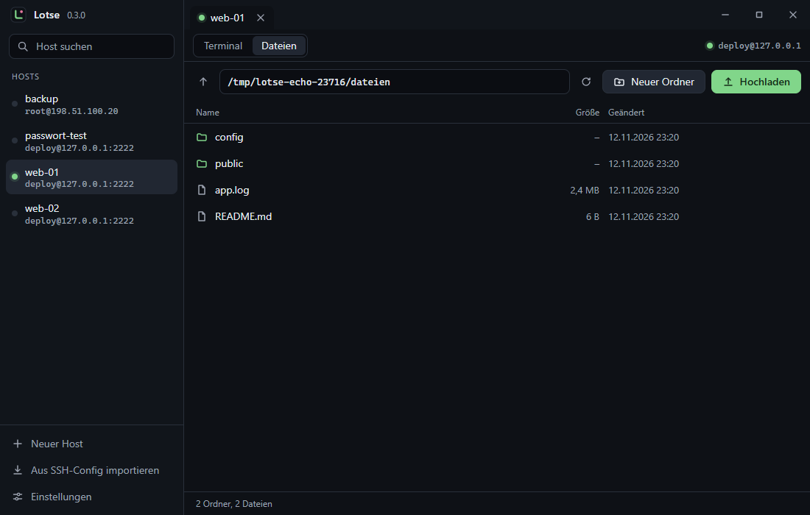
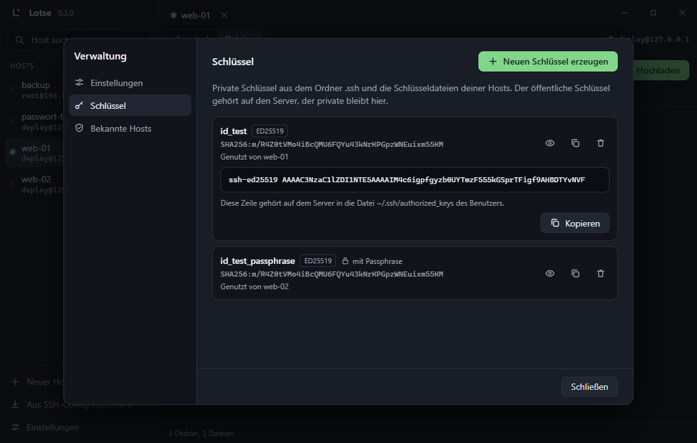

SSH für Windows, ohne Umwege
Lotse bringt Terminal, Dateimanager und Schlüsselverwaltung in ein Fenster. Klein, schnell, ohne Konto und ohne Cloud.
Version 0.4.0 · Windows 11 · Installer 2,9 MB, nicht signiert (Windows fragt beim ersten Start nach)

Was Lotse kann
Terminal mit Reitern
Mehrere Verbindungen nebeneinander, Suche mit Trefferzahl, IP-Adressen in Pink, Schriftgröße mit Strg + Plus und Minus.
Dateimanager
Ordner auf dem Server durchsehen, hoch- und herunterladen mit Fortschritt, umbenennen, löschen, neue Ordner anlegen.
Datei ins Terminal ziehen
Ein Bild oder eine Datei aufs Terminal ziehen oder einfügen: Lotse lädt hoch und schreibt den Pfad an die Schreibmarke.
Schlüssel im Blick
Schlüssel aus dem Ordner .ssh mit Typ und Fingerabdruck, neue ED25519-Schlüssel erzeugen, öffentlichen Schlüssel kopieren.
Passphrase nur einmal
Auf Wunsch merkt sich Lotse Passphrase oder Passwort in der Windows-Anmeldeinformationsverwaltung, nie in einer eigenen Datei.
Sofort startklar
Hosts aus der vorhandenen SSH-Config übernehmen. Unbekannte und geänderte Server-Schlüssel werden klar gemeldet.
Einblicke


Unter der Haube
- Tauri 2
- Rust
- russh
- xterm.js
- kein Node, kein Bundler
- Daten bleiben auf dem Rechner